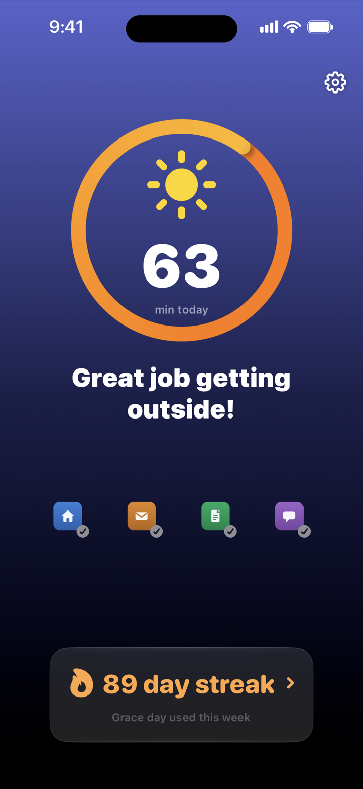
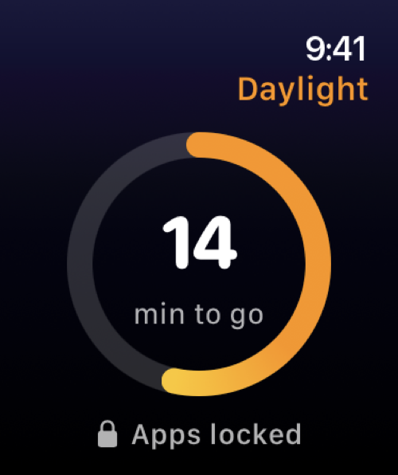
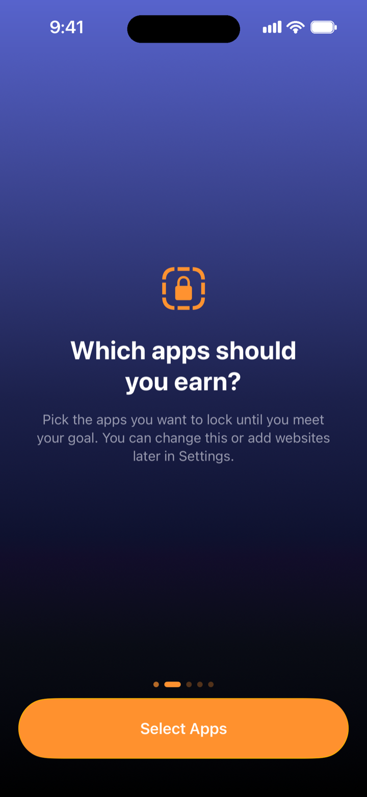
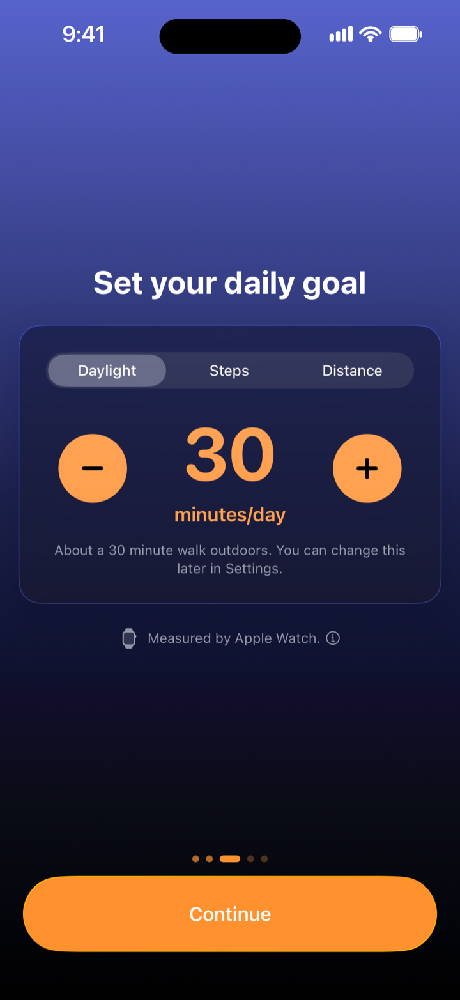
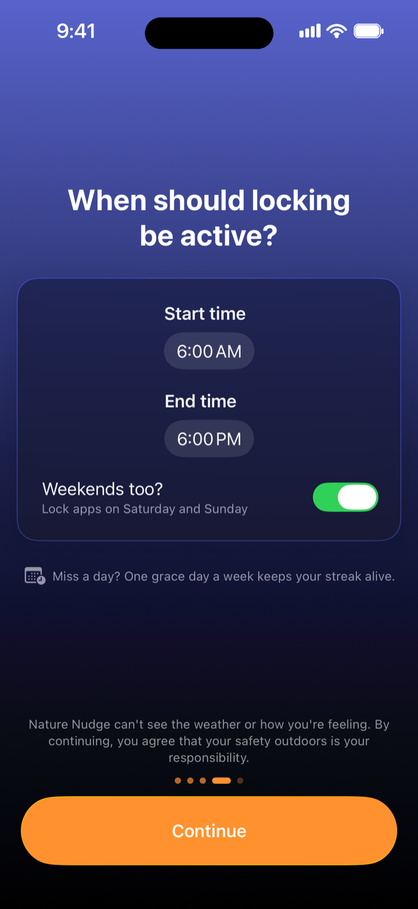
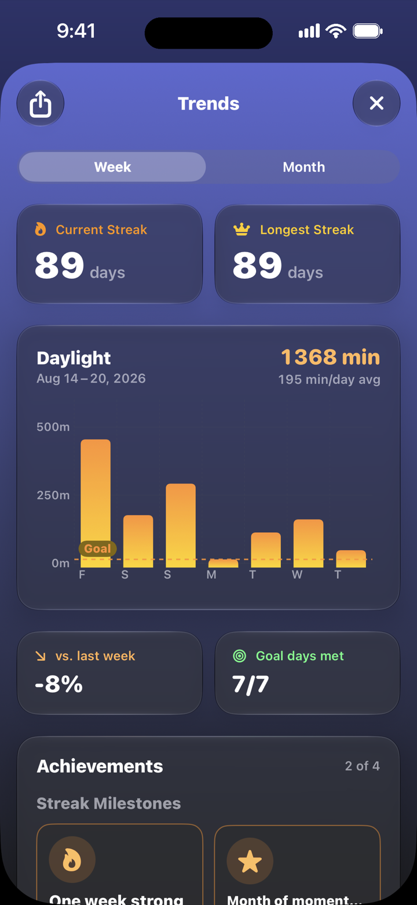
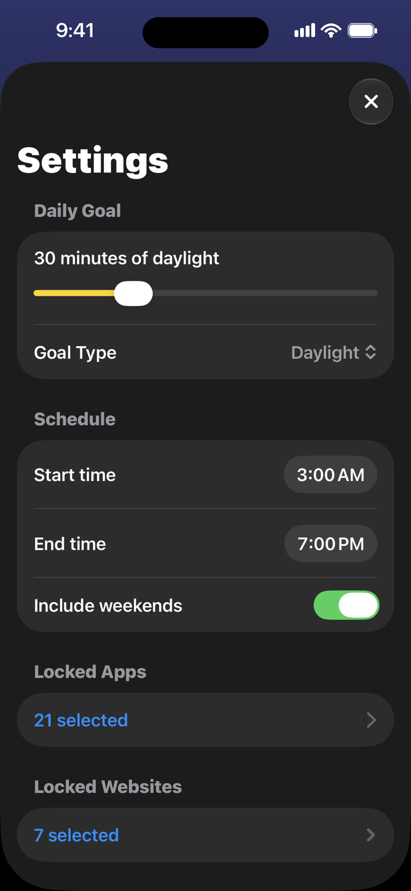

iPhone · Apple Watch
Go outside to unlock your apps.
Your most distracting apps stay locked until you hit a daily outdoor goal: daylight, steps, or distance.


How it works
Three decisions, then it runs itself
Set it up once in about two minutes. After that, the only thing that changes your day is whether you went outside.
-

Step 1. Choose what gets locked
Pick the apps and websites you want to earn. Everything else stays open: calls, maps, music, whatever you actually need.
-

Step 2. Set a daily goal
Daylight, steps, or distance. Daylight is verified by Apple Watch; steps and distance come straight from iPhone Health data.
-

Step 3. Pick your hours
Decide when locking is active and whether weekends count. Outside those hours, your phone is your phone.
Why it works
A lock you can’t argue with
Willpower is negotiable. A goal measured by your watch is not.
-
Real daylight, verified
Daylight goals use your Apple Watch’s ambient light sensor. Manually typed Health entries don’t count.
-
Streaks worth keeping
One grace day a week keeps a real streak alive. Miss twice and it resets, which is the whole point.
-
Private by design
No account, no sign-up, no analytics. Your goals, schedule, and streak never leave your device.
-
Only when you want it
Locking runs on your schedule: weekday mornings, all weekend, or whatever hours you set.
Momentum
Watch the habit stack up
Trends show your daylight week by week, your best streak, and how many days you actually hit the goal, so progress is a number, not a feeling.
- Current and longest streak, side by side.
- Week and month views with your daily average against the goal line.
- Achievements for the milestones that take weeks, not minutes.

Your rules, honestly kept
Easy to set. Deliberately hard to wriggle out of.
Nature Nudge is built so that the version of you making the rule beats the version of you trying to break it.
- Raising your goal takes effect now. Lowering it waits until tomorrow.
- An emergency unlock is always there. It just costs you the streak.
- One grace day a week, because life happens and a broken streak shouldn’t end the habit.
- Change anything, anytime in Settings: apps, websites, hours, goal type.

Pricing
One subscription, both apps
Nature Nudge is a subscription. One plan covers the iPhone app, the Apple Watch app and every feature on this page. Billing is handled by Apple and cancels any time in your App Store settings.
-
Best value
Yearly
$19.99 / year
Works out at about $1.67 a month, a saving of roughly 44% against paying monthly.
-
Monthly
$2.99 / month
The same access, month to month, with no commitment.
Questions
Before you download
Do I need an Apple Watch?
Only for daylight goals. The watch’s ambient light sensor is what verifies real time outdoors. Steps and distance goals work from iPhone Health data alone.
Does it still count if my watch is under a sleeve?
Yes. A long sleeve or a coat cuff over the watch does not stop it counting, so you can walk in whatever you would normally wear and still get the credit. There is nothing to push up and no wrist to hold out.
What happens if I genuinely need a locked app?
There’s an emergency unlock you can use at any time. It opens everything immediately and resets your streak, so it stays available without becoming a habit.
Can I still use my phone normally?
Yes. Only the apps and websites you choose are locked, only during the hours you set. Calls, messages, maps and everything you didn’t pick stay open the whole time.
Does Nature Nudge collect my data?
No. There is no account, no analytics and no advertising. Your goal, schedule, app selections and streak are stored on your device. Read the full privacy policy.
Do I need a subscription?
Yes. Nature Nudge needs an active subscription to lock apps: $2.99 a month or $19.99 a year, billed by Apple and cancellable any time in your App Store settings.
What do I need to run it?
iOS 26 or later on iPhone, iPadOS 26 on iPad, and watchOS 26 for the Apple Watch app. Nature Nudge needs Screen Time permission to lock apps and Health read access for the goal type you choose.
Can I miss a day?
You get one grace day a week. Use it and the streak survives; miss a second day in the same week and it starts over.
Your apps are waiting outside.
Set it up tonight. Tomorrow morning, the only way back in is through the front door.
Subscription required. iOS 26 or later. Apple Watch required for daylight goals.